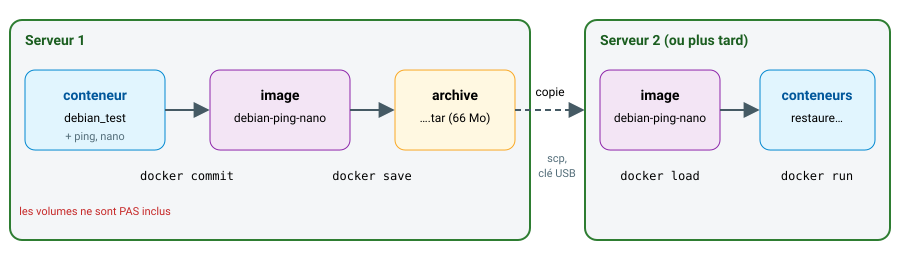

Sauvegarder un conteneur sous forme d'image¶
Résumé
On a modifié un conteneur à la main (des paquets installés, des fichiers ajoutés) et on voudrait garder ce travail, ou le transporter sur un autre serveur. La commande docker commit fige l'état d'un conteneur dans une nouvelle image, docker save range cette image dans une archive, et docker load la recharge, ailleurs ou plus tard.
Ce TP enchaîne les trois commandes sur un conteneur Debian auquel on ajoute ping et nano, puis montre leurs limites : ce qu'un commit ne contient pas (les volumes), et pourquoi on lui préfère un Dockerfile pour tout ce qui doit durer.
| Propriété | Valeur |
|---|---|
| Difficulté | Débutant |
| Durée estimée | 1 h |
| Version décrite | Docker Engine 29.10, image debian:latest (Debian 13) |
| Place dans le parcours | Partie 6 sur 17 du parcours Docker — jour 2 |
| Dernière mise à jour | 2026-11-24 |
Convention de lecture
🐧 VM docker-hote, connecté en tssr · 📦 dans un conteneur · ✍️ exercice. Suite directe de la partie 5 : seul portainer tourne.
1. À quoi sert docker commit ?¶
docker commit transforme un conteneur (avec tout ce qu'on a modifié dedans) en une nouvelle image. Au lieu de reconfigurer un conteneur à la main à chaque fois, on fige le résultat une fois pour toutes. Cas d'usage :
- on a créé un conteneur et installé une application ou des outils dedans ;
- on y a ajouté des fichiers ou des scripts personnalisés ;
- on veut partager cet environnement, ou le déplacer sur un autre serveur.

commit fabrique une image, save l'emballe, load la déballe ailleurs.
2. Sauvegarder l'état d'un conteneur¶
2.1 Démarrer et personnaliser un conteneur¶
-
🐧 Démarrer un conteneur Debian :
Pour un essai comme celui-ci,
latestconvient ; pour une image qu'on garde, on préciserait la version (debian:13, partie 2). -
🐧 Y installer la commande
pinget l'éditeurnano, qui n'existent pas dans l'image de base : -
🐧 Vérifier qu'ils sont bien là :
2.2 Créer une image à partir du conteneur¶
-
🐧 Figer l'état du conteneur dans une nouvelle image nommée
debian-ping-nano: -
🐧 L'image est enregistrée localement, sur la VM : elle n'est envoyée sur aucun registre. La voir :
Elle pèse 232 Mo, contre 187 Mo pour
debian:13: la différence vient des paquets installés et des listes de paquets téléchargées parapt update. -
🐧 Voir où Docker range ses images sur le disque :
2.3 Créer un conteneur à partir de l'image personnalisée¶
🐧 Lancer un nouveau conteneur, sans rien réinstaller, et tester ping :
docker run -dit --name ping-terminator debian-ping-nano
docker exec ping-terminator ping -c2 9.9.9.9
PING 9.9.9.9 (9.9.9.9) 56(84) bytes of data.
64 bytes from 9.9.9.9: icmp_seq=1 ttl=54 time=53.3 ms
64 bytes from 9.9.9.9: icmp_seq=2 ttl=54 time=102 ms
ping est là d'emblée : il fait partie de l'image. Si le réseau bloque ping (certains réseaux d'établissement le font), docker exec ping-terminator which ping suffit à le prouver.
3. Exporter l'image dans une archive, et la restaurer¶
3.1 docker save : emballer l'image¶
🐧 Ranger l'image dans une archive .tar (tape archive, un fichier qui en regroupe plusieurs) :
docker save -o backup-2025-image-debian-ping-nano.tar debian-ping-nano
ls -lh backup-2025-image-debian-ping-nano.tar
Cette archive contient toutes les couches de l'image : on peut la copier sur une clé USB ou un autre serveur (scp), même sans accès à Internet ni à un registre.
3.2 docker load : la restaurer¶
Pour simuler « une autre machine », on supprime tout de la VM, puis on recharge l'archive.
-
🐧 Supprimer les conteneurs, puis l'image :
-
🐧 Recharger l'image depuis l'archive :
-
🐧 Créer un conteneur et vérifier que les outils sont toujours là :
Le conteneur est restauré avec toutes ses modifications.
| Commande | Rôle |
|---|---|
docker commit <conteneur> <image> |
Crée une image à partir d'un conteneur |
docker images |
Liste les images locales |
docker save -o <archive>.tar <image> |
Enregistre une image (toutes ses couches) dans une archive |
docker load -i <archive>.tar |
Recharge une image depuis une archive |
save / load ou export / import ?
Il existe aussi docker export et docker import. Ils travaillent sur le système de fichiers aplati d'un conteneur, en perdant l'historique, les couches et la configuration de l'image (programme principal, ports, variables). Pour sauvegarder et transporter une image, on utilise save et load.
4. Les limites de docker commit¶
4.1 Un commit ne contient pas les volumes¶
🐧 Un conteneur écrit un fichier important dans un volume, puis on le fige en image :
docker run -d --name avecvol -v testvol:/data debian:13 sh -c 'echo important > /data/f; sleep 600'
docker commit avecvol img-avecvol
docker run --rm img-avecvol ls /data
La dernière commande n'affiche rien : /data est vide dans l'image. Attention aussi dans l'autre sens : un commit emporte la configuration du conteneur, y compris ses variables d'environnement. L'image d'un conteneur lancé avec -e MARIADB_ROOT_PASSWORD=… contient ce mot de passe : ne jamais partager une telle image. Un commit ne prend que la couche du conteneur, jamais le contenu des volumes ni des dossiers montés. Pour une base de données, dont les fichiers sont dans un volume, un commit ne sauvegarde donc… rien d'utile. Les données se sauvegardent avec la méthode de la partie 5.
🐧 Nettoyer :
4.2 Une image commitée est une boîte noire¶
🐧 Regarder l'historique de l'image :
IMAGE CREATED CREATED BY SIZE COMMENT
79f335ceb1eb 3 minutes ago bash 28.8MB
<missing> 2 weeks ago # debian.sh --arch 'amd64' out/ 'trixie' '@1… 134MB debuerreotype 0.17
La couche ajoutée par le commit indique seulement bash : rien ne dit ce qui a été fait dedans. Dans six mois, personne ne saura refaire cette image, ni la mettre à jour proprement (nouvelle version de Debian, correctif de sécurité de ping…).
4.3 L'alternative : un Dockerfile¶
Pour un déploiement propre, on décrit plutôt l'image dans un Dockerfile, un fichier texte qui liste les étapes de sa fabrication :
Puis on construit l'image avec docker build -t debian-ping-nano .. Le résultat est le même, mais il est documenté, reproductible et facile à mettre à jour : on change une ligne et on reconstruit. C'est le sujet de la partie 14.
| Cas d'usage | docker commit |
Dockerfile |
|---|---|---|
| Garder vite l'état d'un conteneur avant une manipulation risquée | Oui (sans les volumes) | — |
| Récupérer l'état d'un conteneur pour l'analyser (après un incident, par exemple) | Oui | — |
| Transporter un environnement sur un serveur sans Internet | Oui, avec save / load |
Oui, avec save / load |
| Fabriquer une image qu'on mettra à jour régulièrement | Non | Oui |
| Partager une image avec une équipe, la faire relire | Non | Oui |
5. Exercice¶
✍️ Dans le conteneur restaure, créer un fichier /root/LISEZMOI.txt contenant « Image du TP », puis fabriquer une image debian-outils:v2 à partir de ce conteneur. Vérifier, avec un nouveau conteneur jetable, que le fichier est bien dans l'image.
Réponse
docker exec restaure sh -c 'echo "Image du TP" > /root/LISEZMOI.txt'
docker commit restaure debian-outils:v2
docker run --rm debian-outils:v2 cat /root/LISEZMOI.txt
Le :v2 est l'étiquette de l'image (partie 2) : sans elle, Docker aurait utilisé latest.
6. Faire le ménage¶
🐧 Supprimer ce qui a servi au TP :
docker rm -f restaure
docker image rm debian-ping-nano debian-outils:v2
rm -f backup-2025-image-debian-ping-nano.tar
7. Vérifier son lab¶
Vérifier son lab
🐧 Ce test enchaîne les trois commandes du TP, avec une image qu'on n'aura plus besoin de garder :
docker run --name essai-commit debian:13 sh -c 'echo ok > /preuve'
docker commit essai-commit essai:1
docker save -o essai.tar essai:1 && docker image rm essai:1 && docker load -i essai.tar
docker run --rm essai:1 cat /preuve
docker rm essai-commit; docker image rm essai:1; rm essai.tar
Résultat attendu (identifiants raccourcis) :
sha256:…
Untagged: essai:1
Deleted: sha256:…
Loaded image: essai:1
ok
essai-commit
Untagged: essai:1
Deleted: sha256:…
Juste après Loaded image: essai:1, la commande cat affiche ok : le fichier /preuve, écrit dans le conteneur, a traversé commit, save et load.
8. Questions de révision¶
- Que fait
docker commit? Où est rangée l'image créée ? - Quelle est la différence entre
docker saveetdocker commit? - On fait un
commitd'un conteneur MariaDB dont les bases sont dans un volume. L'image contient-elle les bases ? Pourquoi ? - Pourquoi préfère-t-on un Dockerfile à
docker commitpour une image qu'on gardera longtemps ? - Comment transporter une image sur un serveur qui n'a pas accès à Internet ?
Corrigé
- Il crée une nouvelle image à partir de l'état actuel d'un conteneur (sa couche en écriture par-dessus l'image d'origine). L'image est rangée localement, dans le stockage de Docker (
/var/lib/docker), et n'est envoyée sur aucun registre. committransforme un conteneur en image ;savetransforme une image en archive.tar, pour la copier ou la ranger.- Non. Un
commitne prend jamais le contenu des volumes ni des dossiers montés, seulement la couche du conteneur. Les bases se sauvegardent en sauvegardant le volume (partie 5) ou par un export (mariadb-dump). - Un Dockerfile documente chaque étape de fabrication : l'image est reproductible, relisible par une équipe, et facile à reconstruire avec une version plus récente. Une image commitée est une boîte noire dont personne ne sait refaire le contenu.
- Sur une machine qui a Internet :
docker pull(oudocker build), puisdocker save -o image.tar …. Copier l'archive (clé USB,scp…), puis sur le serveur :docker load -i image.tar.
Ressources¶
- Docker —
docker container commit— options de la commande (en anglais). - Docker —
docker image saveetdocker image load— exporter et importer des images. - Partie précédente : Garder ses données : volumes et dossiers montés · Partie suivante : Les réseaux Docker.